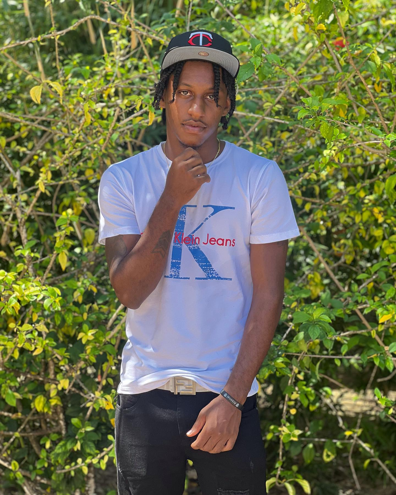
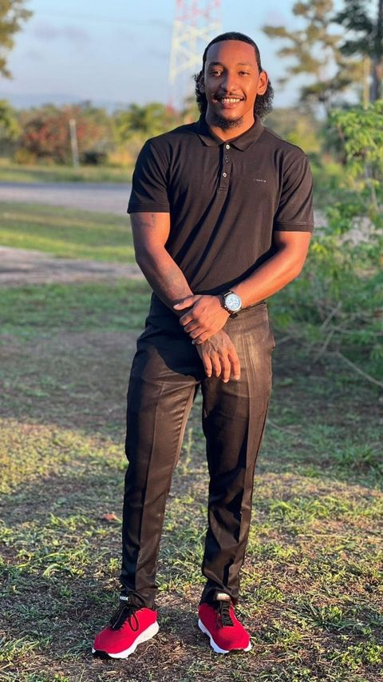
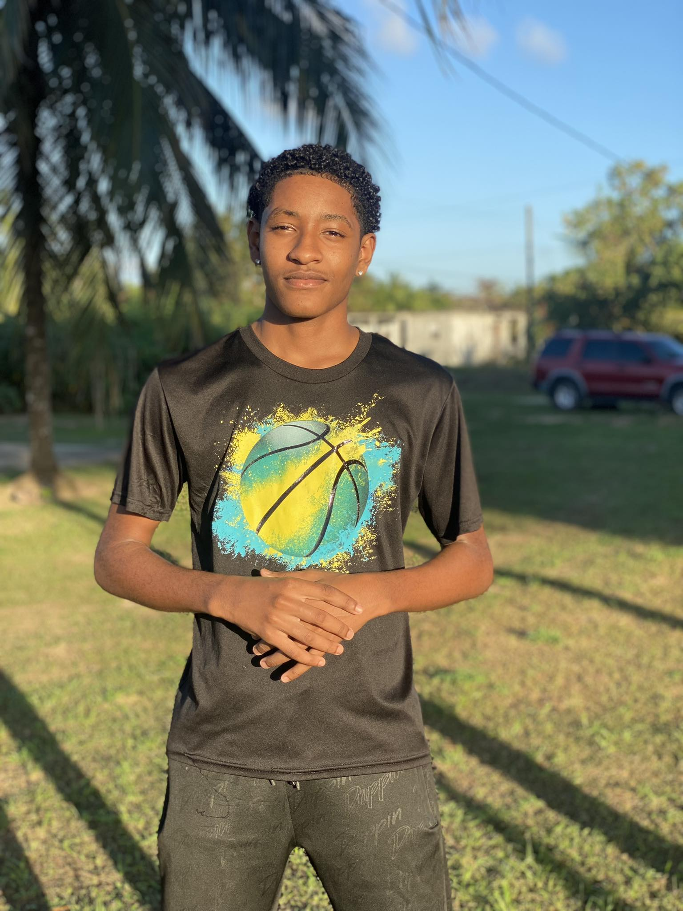

Welcome to our official website! Here you can find the creators, goals, and the mission and vision statement of this wonderful team.
Follow Ace Studios Ent. on Instagram @acestduios.ent or click the link below.
acestudios.ent
It all started when three intelligent individuals that branched off from one family tree decided to put their talents to work. These three individuals are no other than; Tehroy Coleman known as "Ace G", Elroy Coleman, the big bad producer known as "Mag 17" and a young creative individual, Tafaroy Coleman known as "AceGad".These three individuals came together and founded something so wonderful and legendary. Anyways, this team consists of a very versatile and talent embedded artist, a producer that has the ears for music making every song he produces have the quality to deliver it to you all, and finally, the very creative individual, the person behind all the vibrant cover art for the different songs released.
Tehroy Coleman known as "Ace Boss" a very unique and talented individual,
founded a passion for singing. In the world of music, you must be the best
to receive the best, so as expected Ace G continued to practice his unique way of singing.
Anyone that is a fan of Ace G knows that every verse, chorus, and every song
that he has ever released is known to be a hit leaving a ring in everyones ears,
having them jumping and vibing to his songs.
Ace G a Belizean artist, defines his music as something unique with a hip hop and dancehall origin.
He continues to strive for quality work with his team to bring forth the best version of his work for all to listen to and enjoy.
He believes in giving something so unique and something his supporters will love and appreciate is acheivable with the help of his team Ace Studios
and his producer Mag17.

Follow Ace G on Instagram @aceg_musiq or click the link below.
@aceg_musiq
Elroy Coleman known as the big bad producer "Mag17". Every song he has
ever produced for Ace G, is produced with quality and sense. He is always
in the studio cooking up a new song for the listeners and viewers.
I guess you could say that he has the ears for music as the songs released,
are released in quality.
Mag17, a Belizean music producer, fully supports the Ace Team and the Ace Studios team
bringing you forth the best music possible with a hope of putting Belize on the map and to be known in the
music industry as one of the best music producing country.

Follow Mag17 on Instagram @elroy.coleman.jr or click the link below.
elroy.coleman.jrTafaroy Coleman, known as many different names but mainly "AceGad", is a very creative
and inteligent individual. He is not only a graphic designer/artist, but also a coder and website creator.
Every song produced in quality will need a cover art in quality and that's the specific role
he plays in the Ace Studios Team.
AceGad, a Belizean graphic/web designer, is fully in depth with his team
and tries to bringforth the best work possible for all viewers to enjoy.
He sees his work as something so unique that not everyone is capable enough to
accomplish what he's done even though it is possible for everyone.

Follow AceGad on Instagram @acegad_musiq or click the link below.
acegad_musiq
Ace Team and Ace Studios Ent., our mission is to create and produce electrifying dancehall music that transcends boundaries and connects with diverse audiences worldwide. As three brothers driven by our shared passion, we are dedicated to crafting innovative sounds and unforgettable performances. Our unified goal is to inspire, entertain, and empower through high-quality music production and dynamic artistry, all while staying true to our cultural roots and personal authenticity.
We envision Ace Team and Ace Studios Ent. as a leading powerhouse in the dancehall music scene, recognized for our creativity, unity, and influence. Our vision is to push the boundaries of the genre, setting new standards in music production and performance. We aim to build a lasting legacy that not only showcases our talent but also empowers the next generation of artists. Through our commitment to excellence and innovation, we aspire to shape the future of dancehall music, fostering a global community that celebrates diversity and the unifying power of music.
Check out Ace G on Youtube
Ace G can be contacted via;
Email: tehroyc@gmail.com or
Instagram.
Check out AceGad on Youtube
AceGad can be contacted via;
Email: tafaroyc@gmail.com or
Instagram
Stream "Ukase" on your favorite platform!
Ace G - Ukase (official Music Video)
Be sure to check out all our other releases!